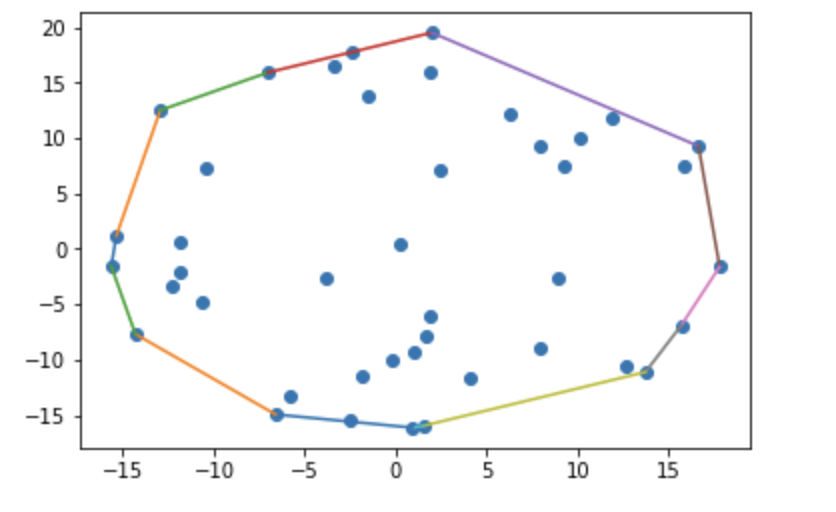

The Kirk-Patrick Seidel Algorithm is a computational geometry algorithm used to find the convex hull of a set of points in the plane. The convex hull is the smallest possible convex polygon that encloses all points in the given set. It is also called Prune-and-Search algorithm.
The basic idea of the KPS algorithm is a type of reversal of the divide-and-conquer algorithm for convex hulls. This algorithm tells us to divide the problem into subproblems, solve the subproblems, and finally merge the subsolutions.
Finally, it can be said that the Kirkpatrick-Seidel algorithm begins by dividing the input points based on the median x-coordinate. It then identifies convex hull edges intersecting the median-defined vertical line, discards non-contributing points, and proceeds recursively with remaining points. Recursion is separately performed for upper and lower hulls, discarding points accordingly. This process is repeated until the entire convex hull is obtained.
The time complexity breakdown of the Kirkpatrick-Seidel algorithm is as follows:
Thus it can be summarized as follows:
Here is a detailed breakdown of the time complexity analysis of Kirk-Patrick Seidel Algorithm
In conclusion, determining the convex hull of a set of points in the plane can be done quite well with the help of the Kirkpatrick-Seidel algorithm. The method achieves an O(n log h) time complexity by using a divide-and-conquer technique and taking use of convex hull features. Here, n represents the number of input points and h denotes the number of points on the convex hull. The Kirkpatrick-Seidel method offers a strong and dependable solution for convex hull calculation through careful point management throughout the recursive process, including median-based splitting, eliminating non-contributing points, and merging upper and lower hulls. Because of its effective performance, it is the go-to option for many applications in computational geometry and related domains.